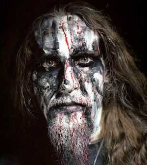
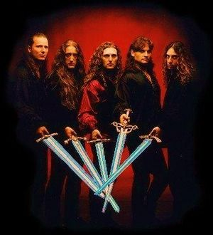
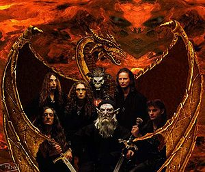

Jebi
 De: La Frikipedia, la enciclopedia extremadamente seria.
De: La Frikipedia, la enciclopedia extremadamente seria.

|
ATENCIÓN
Este artículo debería separarse en varios artículos. Ya que o bien habla de varios temas a la vez o que contiene definiciones o es tan extenso que debería ser dividido. Así que entra y corta, fragmenta, despedaza, trincha, escinde, parte, divide, separa, aisla, fracciona, amputa, cercena y secciona el artículo en varios de ellos. Si no sabes como empezar mira la discusión del artículo. Y no olvides desambiguar después.
|
| De la serie tribus urbanas del mundo:
|
| Jebi
|
Ejemplo de la tribu
|
| ¿Hombres o mujeres? ¡Fenómenos!
Black Sabbath, el "¿Quién es tu papi?" del Metal.
|
|
| Hábitat
|
En todo el mundo conocido y por conocer.
|
| Inteligencia
|
Lo suficiente como para no escuchar reguetón. Luego varía en función de si uno es True Heavy o Falso Jebi.
|
| Frase favorita
|
Vive y deja morir.
|
| ¿Peligroso?
|
Sí, si insultas a su banda favorita.
|
| Obsesión
|
Dejarse el pelo lo suficientemente largo como para que les estorbe al cagar.
|
| Notas
|
La agenda la usan únicamente para poner pegatinas de Iron Maiden.
|
«El Heavy Metal no es música, es ruido»
~ 4jonatica en su defensa de Justin Bieber.
«Los jebis no son sociables, pero yo tengo amigos jebis»
~ 4jonatica en su defensa de Justin Bieber.
«¡¡¡¡¡¡¡¡¡UAAAAAAAAAAAAAAAA!!!!!!!!!!!! (ostión)»
~ Jebis en respuesta de lo anterior.
Estos seres, Rockerus metarius, jebis o metaleros, que se ven todos los días, y sobre todo todas las noches, no confundir con rockero (Rockerus rockanrolensus) y se escinden como nueva especie alrededor de los años 70 ('70, que queda más fino).
Características del jebi según un marica emo: Caracterizado por ser unas bolas de sebo, con pelo de polla en su "barba" y su "pelo" (si se puede denominar así), sus camisetas de Iron Maiden y sus pantalones de cuero, así como por su tendencia relativa a ceder electrones debido a su carácter metálico, el jebi no ha sufrido grandes evoluciones desde su nacimiento. Sin ir más allá, la camiseta de Maiden ha acompañado a nuestro amigo jebi desde siempre, y ya forma parte de su cuerpo.
Otra de las características más notables de este espécimen es su larga melena, la cual les llega casi hasta el culo.
No pueden faltar en su indumentaria ni los pantalones de cuero ni las botas militares o unas New Rock. En el caso de no tener dinero para pagarse unas, algo bastante común debido al gran consumo de cerveza que ejercen, el jebi recurrirá a unas botas de trecking.
Su hábitat natural
Dos imágenes tomadas al azar de la primera página de resultados que nos devuelve el
Gugel si buscamos "Heavy"
El Jebi está presente en todas las ciudades del mundo, en menor o mayor cantidad. En Latinoamérica los jebis son particularmente conocidos como "metaleros", y su vestimenta primaria son unos pantalones increíblemente apretados que son casi un crimen, ya que la polla de un jebi es un... poquito gorda (está bien, muy gorda) y no deberían ir mostrándola por ahí como quien enseña el nuevo iPod Touch o una buena porno de lesbianas a sus amigos. Lo que más les gusta a los jebis es beber, beber y beber cerveza, cerveza y más cerveza, fumar porros (de los gordos); y matar pijos, canis y seres similares, con hachas oxidadas.
De día, al jebi se le puede reconocer por su vestimenta, ya que destacará ver algo negro en mitad de un mundo de colores a 16 bits. Sin embargo, el color negro en el jebi admite una tolerancia del 50% y puede ser combinado con otros tonos como el rojo sangre o el de camuflaje. Cuando cae el Sol, cuidado con ellos, porque la vestimenta es la misma que usan de día y no los podrás ver ni ubicar en el mapa hasta que estén detrás de ti y sientas su aliento en tu nuca.
Pero por la noche, al jebi se le reconoce por los follones que arma y por beber litros y litros de cerveza y kalimotxo como un campeón en formato litrona. Si se agudiza el oído, se podrá reconocer si hay un grupo de jebis por las cercanías debido al sonido de música brutal y de litronas reventando contra el suelo o contra sus propias cabezas. Lo más habitual es que esto ocurra dentro de un bareto jebi, aunque cualquier lugar público con música a todo volumen y mujeres agresivas les vale.
¿Acaso has visto a alguien más Jebi?
Los baretos jebis se diferencian de los pubs normales en que:
- No tienen un gran cartel que ponga su nombre, o directamente no tienen cartel.
- No se ven luces rosas salir del interior (ni de ningún otro color, ya que realmente no hay bombillas dentro. Quizá luz de algún mechero), pero sí un fuerte olor a porros, y una espesa niebla formada por el humo de las fogatas, los cigarros y los porros.
- Hay más gente en la puerta que dentro del local.
- La música se escucha antes de ver el propio bar. (Por ello casi ningún jebi entra si no quiere quedar sordo).
- Suele haber dos o más Harleys aparcadas delante del bar.
- Los suelos se caracterizan por tener una fina película de sedimento pegajoso (lo que se llama suelo jamagoso).
- Las mesas no se han limpiado desde mediados de los '80 (unos lo llamarán tradición entrañable, otros, guarrería incontrolable).
- Los lavabos... sin comentarios (un agujero en medio del suelo sería más higiénico, y por eso muchos bares jebis ya lo han incorporado a sus instalaciones). También es típico que no haya puertas en los lavabos, o que si las hay, la del aseo de las mujeres esté llena de posters de tías.
- Nunca habrá un DJ o una rubia (salvo que sea de tinte, a las cuales no hay que confundir con las de bote).
- No hay escupideras en el suelo, puesto que desaparecería el sedimento nombrado anteriormente.
- Hay un futbolín (o 2, depende de las cervezas que hayas tomado) siempre antiguo, con obstáculos en la pista (sean colillas, restos de kalimotxo, o substancias incalificables) que hacen que la pelotita se quede enganchada en algunas partes del mismo. A los muñequitos de los futbolistas siempre les falta algún brazo/cabeza, y los palos para moverlos suelen estar oxidados y se encallan. La solución a esto suele ser escupir abundantemente en los palos para lubricarlos y así que no se encallen, cosa que crea más oxido y a corto periodo de tiempo (cuando la saliva se ha vuelto a secar) que aún se encalle más. Suele estar demostrado que cuanto más borracho vayas, mejor se juega, la alineación perfecta (capaz de ganar cualquier partido) sería un sobrio defendiendo y un borracho atacando.
Alimentación

El desayuno de Ozzy (los murciélagos son la cena y las palomas son de
Alice Cooper).
La alimentación de este ser, a pesar de ser muy parecida a lo largo y ancho del globo, ha sufrido cambios con el paso del tiempo.
En sus orígenes, todo jebi necesitaba ingerir diariamente su propio peso en heroína, pero, tras la propaganda en contra y diversas muertes no relacionadas (véase "Freddie Mercury" o "Antonio Flores"), esta forma de alimentación se ha reducido hasta prácticamente su desaparición.
Hoy en día la alimentación básica de un jebi se basa en una mezcla entre kalimotxo, porros, cerveza y bocatas de chorizo y mortadela; aunque diferentes estudios demuestran que son capaces de organizar batidas para cazar quesitos, tal y como demuestra el documetal sobre esta especie, "Isi/Disi". En otros casos, también suelen ir a cazar pijos, o en el caso de los blackmetaleros, comen biblias.
Algunos jebis como Ozzy prefieren una delicia, el wombat; su parte favorita es la cabeza.
Aunque ultimamente los jebis desayunan fans de justin bieber y como almuerzo emos al horno claro que primero les quitan el fleco para que no sepan tan mal, tambien se a dado el caso de que cenan fans del Nu Metal en especial a los de linkin park y slipknot, y segun se dice tambien hacen una rara mescla de sangre de pijo,polvora, whisky y leche en polvo conocido como la bebida de los dioses que segun fuentes nada muy confiables sabe a miel de hormiga.
Aliados y Enemigos

¡Argh, pisé un jodido clavo!
Los jebis, aparte de su salvajismo inicial de los años 80, hoy en día constituyen un colectivo pacífico si se les trata con respeto y de acuerdo con las normas jebis. Se limitan a seguir el lema de: "Vive y deja morir", y no son un grupo que busque bulla sin motivo. Eso sí, si los provocas, prepárate, porque una vez cabreados se transforman en una máquina de destrozar.
Los aliados de los jebis se pueden encontrar reunidos cerca de los locales donde abrevan las manadas de jebis. Entre los aliados naturales de los jebis podemos encontrar otros grupos con intereses afines, o cuya alianza beneficia a ambos bandos. Podemos encontrar:
- Los Rockeros. Son primos cercanos, cuates del alma, compañeros de borracheras, de cacerías de pijos y su música no es mala del todo. Así pues, la alianza es beneficiosa.
- Los Hippies. Ellos fueron, incoscientemente, los padres de la especie metalera. Por eso, aunque ambas razas tengan maneras de ver el mundo opuestas, se respetan mutuamente. ¡¡Ademas los hippies lo pasan bueno y barato, joder!!!.
- Los Funks: Compañeros de sabiduría infinita, exportadores de plantas alucinógenas, maestros de solos a lo más Funk, y claro, colegas en la temporada de cazar Pijos, Canis, y Reggaetoneros por diversión. Compañeros inagotables en el Headbanging (cabeceo) y el Mosh. Aunque difieron un poco en cuanto a gustos musicales al escuchar Parliament o Funkadelic y su twist de soul.
- Los Grunge. Comparten el gusto de las botas y el pelo largo, además del vodka, que "kamarradas".
- Los Epica. Ademas, si se unen los poderes psíquicos de los góticos con la fuerza bruta de los jebis, se puede crear una máquina de matar imparable, como el temido Undertaker. Representan la tortura psicologica en favor de los jebis.
- Los Frikis. Aunque a veces los heavys se meten con esta especie, pueden ser amigos por varios motivos. Esto se deve a que unos ponen la inteligencia, y los otros la fuerza ejecutora. Juntos son imparables, pues son combinación devastadora contra el enemigo. También hay que tener en cuenta que hoy en día muchos frikis tienen tendencias jebis, y viceversa, lo que hace que ambos grupos estén cercanos el uno al otro.
- Los Madmaníacos: No hay nada mejor que fuerza bruta y sarcasmo juntos para criticar a los enemigos. Además, muchos jebis son madmaníacos, y viceversa (véase MAD).
- Los Hombres Lobo. Se dice que los hippies tuvieron dos tipos de hijos: un jebi, fruto de la unión de un hippie y una hippie, y un hombre lobo, hijo de un hippie y... Vamos, que los hermanos han de llevarse bien, y si encima son monstruos asesinos, mejor que mejor.
- Nota adicional: El nombre científico de un híbrido entre un jebi y un hombre lobo es Pechode Paul Stanley. Eso explicaría muchas cosas...
- Los Vampiros: Recientemente aliados a góticos, jebis y frikis, estos tíos son la élite. Hace tiempo que andan mosqueados por la creación de la saga de Crepúsculo y quieren a alguien con quien desquitarse. Son inmunes al virus de la sangre pija y crean una de esas barreras mentales con los góticos contra el efecto bazooka.
- El champú. La
greña melena de un jebi debe verse larga, brillante, fuerte, sana... Una de las posturas del kamasutra jebi se llama "headbanging", que significa mover el pelo como si de un molino se tratara, pero al son de la música. Por lo tanto, es indispensable nutrir, lavar e hidratar el pelo para que éste crezca y sea una fuente de orgullo. En muchos casos la salud de un pelo jebi supera la de un pelo pijo, puesto que el jebi no suele malgastar en tintes a cada dos por tres, ni permanentes ni gominas que puedan dañar a uno de sus símbolos de identidad.
- La ducha, el jabón y el desodorante. Indispensables para ligar con el sexo opuesto y para que a nadie se le ocurra tachar a un jebi de cerdo.
Ya se ha señalado anteriormente que los jebis han dejado de lado su inicial brutalidad propia de los años 80, y no suelen buscar problemas. Sin embargo, hay determinados grupos que son enemigos naturales:
- Los Punks. Nunca fuimos aliados, siempre en la contra desde los '70. Se cortan el pelo con un corte extraño (véase cresta) que se desarma al hacer headbanging, y eso no es muy práctico. Hay rivalidades por ello y mas, mas no son tan enemigos por que odian lo mismo que los jebis. Sus canciones son tres acordes sin solos y son todos malos, tanto guitarrista, bajista, cantante. Pintan las casas de la gente inocente con A de anarquía, una idea que es antipacifista. Unos hijoputas sueltos...
- Los Canis. Son los dos extremos; completamente contrarios. Es por eso que surgen las rivalidades, pero son iniciadas por los canis, que siempre han sido más pendencieros y se dedican a hacer nada. Por eso, en ocasiones hay que sacar el mandoble.
- Los Pijos. No es culpa de nadie si tienen una diana en la boca, pero ya que la tienen, habrá que aprovechar...
- Los Raperos. Se dedican a hacer ruidos extraños con la boca, y piensan que el heavy está pasado de moda. ¡¡Que agarren una buena guitarra, que se van a enterar de lo que es la música auténtica!!
- Los Emos. No son enemigos, ya que matarlos es pérdida de energía, pues ellos se matan solos. Siempre cortándose e intentando morirse. ¡PUES MUÉRETE! ¡NO PASA NADA!
- La policía de Bogotá (o cualquier otra poli). Aunque cualquier autoridad en cualquier ciudad es blanco de sus ataques si se atreven a meterse con ellos o a joderlos en las manifestaciones de la Nacional.
- Los peluqueros con sus afiladas tijeras. La melena del jebi debe ser libre, como su alma en el Infierno. Aparte de que... ¿qué menearías de la manera más animal en los mejores momentos de las canciones? ¿Los pelos del culo? ¡¡Sólo el gran Rob Halford puede permitirse ser calvo, y tú no osarás copiarle!!
- Los Regaytoneros. Cualquiera al que le guste cualquier estilo musical odiará a este colectivo, y a los jebis les gusta mucho la música jebi. La destrucción de la cultura musical mediante bazofias comerciales no es algo beneficioso para la sociedad, así que, a fin de cuentas, te están haciendo un favor.
- Los Pokemones. Tribu chilena, todos con esos peinados raros, escuchando su mierda de Regayton y bailando como putos y putas. Unos verdaderos imbéciles.
- El Peje. Cualquier persona con cerebro es enemigo de éste. No me podria imaginar por que mas.
- Los Emos. Bueno, sólo los mencionamos de nuevo porque son demasiado enemigos (hasta de sì mismos, si no ¿por que cortarse?).
- El bakalao.Un reciente estudio demostro que
eres gay los jebis no son invencibles y no hace falta un Flak 88 para liquidarlos;si pones una canción de Bakalao masia o coliseum debilitara al jebi y reducirá su fuerza en un 101 % , entonces un cani deberá golpearle en la cabeza con todas las cadenas que tenga y el jebi caerá exhausto de tanto sexo derrotado, pero en el momento que la canción termine el jebi resucitará furioso y con el doble de fuerza que al principio y marchará directo a por el cani y acto seguido le violará matará. La única manera de evitar esto es que empiece otra canción, entonces el Jebi si que esta perdido.
- Justin Bieber. Cualquiera con un cerebro con dos neuronas conectadas, se puede dar cuenta, que este es un enemigo y de los grandes. Lo podemos clasificar con los Regaytoneros (de mierda) y los poshetes de musica comercial. Cualquiera con 3 neuronas conectadas, se daria cuenta que para acabar con esta amenaza, se tiene que juntar con los jebis (aunque sean enemigos) para combatir a un enemigo mayor (en este y el único caso, él).
El Jebi en Combate
«For The King, For The Land, For The Mountains!»
~ Power Metalero cargando hacia la batalla.
«Leather, spikes and swords... mighty warriors with metal on their side, enemies of metal your dead is our reward!»
~ Power Metalero cargando hacia la batalla.
«Raid through theyre blood that we badly have said»
~ Power Metalero cargando hacia la batalla
Thrashers en pleno combate.
El chico
Varg en combate, aqui se puede ver su mazo.
 Tu abuelo Jebi después del combate
Ataques:
Un jebi cabreado es una máquina de matar imparable. Muchos de los que se han enfrentado a ellos no han sobrevivido. ¿Cómo sabemos entonces cómo es un jebi en la batalla? Tras semanas de arduas investigaciones, se ha conseguido traducir los balbuceos de un cani que se encontraba en el lugar incorrecto a la hora incorrecta. Los datos que se han obtenido son los siguientes:
- Un jebi es una máquina lenta y pesada, como un tanque de la 2ª Guerra Mundial. Se dirigirá hacia ti con parsimonia, ya que realmente no tiene prisa por alcanzarte. Aprovecha y corre.
- Si tratas de mantenerte lejos del jebi agresor y atacarle a distancia, debes saber que las piedras, las flechas, las balas y los obuses rebotan en su piel. Lo único que lo puede dañar es el impacto directo de un Flak 88, pero ya no se fabrican. Así que no desperdicies tu tiempo y sigue corriendo.
- Un jebi consume muchísimo combustible. De hecho, normalmente llevan detrás 5 esbirros cargados con barriles de cerveza y una sonda enchufada a la vena. Si pensabas que se cansará, ahhh... eres un idiota, corre y sigue corriendo.
- Si tienes la estúpida idea de esconderte y esperar a que pase de largo, debes saber que los jebis llevan de serie sensores térmicos en los ojos, por lo que no te servirá de nada. Además como escuchan su musica a deciveles letales para cualquier otro ser en un medio normal escuchara tu respiracion a metros de distancia y no importan las puertas, paredes, precipicios o rios de lava que pongas entre el jebi y tú, él los atravesará en linea recta para alcanzarte.
- Cuando te alcance (y créeme que lo hará), no merece la pena que te defiendas. ¿Para qué ibas a desperdiciar tus últimos segundos luchando contra el destino?
Como se puede observar, un jebi enfadado es un espectáculo que ninguna persona normal debería ver nunca. Sin embargo, lo anteriormente descrito es un jebi dirigiéndose hacia la batalla. Cuando llega el momento de la acción, los ataques propios de un jebi son:
- Patada matacanis. Es una patada que el jebi usará cuando quiera matar al susodicho ser al que se enfrenta. Consiste en dar una patada pechal frontal que matará al individuo en cuanto la reciba. Es más efectivo si su oponente es un cani.
- Cabezazo demoledor. Útil tanto dentro como fuera del combate. Es el ataque básico de los jebis, lento pero poderoso. Gasta 3 puntos de maná y causa 12 de daño. También sirve para abrir puertas, paredes, cajas fuertes, derrumbar edificios... ¿Pensabas que las Torres Gemelas habían caído por un atentado terrorista? Piénsalo otra vez.
- Solo de guitarra. Al inicio del combate, el jebi puede sacar su guitarra y marcarse un solo con sus amplificadores gigantes, aumentando su velocidad y poder de ataque en 5 puntos. No consume maná.
- Patada jebi. Aprendida de un Kamen Rider, es una destructora patada propinada por las botas con estoperoles en las puntas de un jebi enfurecido. Es capaz de derribar montañas de 3.000 metros (imaginar gigantesca montaña derribandose en una nube de polvo y escombros). Un espectáculo aterrador. El Jebi Elegido (Eddward) tiene la fuerza de una patada voladora de Chuck Norris.
- El tipo que escribió lo de Eddward murió porque nada puede igualar a una patada de Chuck Norris.
- Melena protectora. En momentos de apuro, el jebi puede menear su melena salvajemente, deflectando todos los impactos que pudieran dañarlo (el Flak 88...). Gasta 5 puntos de maná y vuelve invulnerable al jebi durante 30 segundos. Sin embargo, el jebi no puede realizar ninguna acción mientras está meneando su melena. Si se hace bajo los efectos del Solo de Guitarra, se duplica su duración y daña a todos los enemigos cercanos en 1 punto de vida/segundo.
- Revés capilar. Ataque cuerpo a cuerpo del jebi. Gasta 4 puntos de maná, pero bien ejecutado puede llegar incluso a cegar al enemigo. Consiste en un rápido giro de cuello que hará que la melena del jebi vaya a golpear "accidentalmente" la cara del enemigo, pudiendo así cegarlo o causarle graves daños irreversibles si el jebi no se lava la cabeza.
- Headbanging: Eficiente tecnica defensiva que consiste en gastar 1 puntillo de mana para una defensa absoluta por turno.
- Puñetazo americano. Los jebis siempre van armados con collares, pulseras, tobilleras, cinturones y joyería varia de pinchos. Cuando se enfrentan con un cani/gitano, éste no tiene nada que hacer contra ellos, puesto que un medallón de oro no sirve de nada contra los latigazos de un cinturón de auténticas balas. Consume 3 puntos de maná por cada golpe, pero arrean 10 de daño.
- Sobaquina de la muerte. Cuando el jebi levanta sus brazos, unos vapores propios de un vertedero nuclear (posiblemente Ramonio) asolan el terreno en el que se encuentre. Reduce la velocidad de los enemigos en 2 puntos y les causa un envenenamiento lento que les daña gradualmente. Se han dado casos en que lo que esconde un jebi bajo el brazo no siempre es sudor, a veces son restos de polvos blancos...
- Las cuerdas de Dios. Si el jebi se encuentra con un grupo de enemigos avanzando en linia recta a por él, el jebi clavará sus pies en el suelo, cogerá la guitarra y con su solo de
HOSTIA PUTA metalero destruirá sus cuerdas que, a lo Renji de Bleach y alcanzando una velocidad de 200.000 km/h, destruirá todo en un radio de 1.000.000.000 km. Destruirá el planeta entero, sólo salvando a la raza jebi, y lo más importante es que todos los que se encuentren delante de las cuerdas morirán destrozados por las cuerdas del metal que limpiarán sus almas de odioso reggaetón, coñones sisters, y otros impuros. (¿Te preguntas por qué no lo han hecho ya? Pues muy fácil, porque si dejan enemigos podrán seguir ofreciendo sacrificios de razas emos, canis, poperos, etc.).
- Mano cornuta. Si el jebi levanta su mano cornuta (¿acaso hay otra?) hacia los cielos y grita "¡¡Brothers of Metal!!", 5 pequeños jebis saldrán de la tierra para ayudar al jebi en apuros. Consume 15 puntos de maná.
- Hachazo del Valhalla. El ataque definitivo de todo jebi. Tarda 30 segundos en cargar, pero cuando se lanza toda forma de vida en 2 kilómetros a la redonda del jebi muere automáticamente. Tras esto, el jebi también muere y alcanza, por fin, el Paraíso Nórdico.
- Armagedón. Si se da el caso de que un jebi se enfrente solo a una horda enemiga (ya sea así de inicio o por la muerte de los componentes de su bando), en uno de cada 20.000.000 casos, si el jebi carga contra ellos usando el nombre de uno de los dioses del Metal como grito de guerra, se abrirá la tierra y éste emergerá, devastando todo a su paso para finalmente llevarse y confinar las almas de sus indefensos enemigos en las más ardientes y metalicamente sonoras llamas del Infierno.
- Grito. El jebi te cogerá de la cabeza y arrojará un ¡¡¡METAL!!! que te reventará los timpanos al cabo de unos segundos y, pasados los 20, te estallará la cabeza. Consume 10 de maná.
- Invocación. Este ataque sólo puede ser usado en caso de emergencia (como Judas en las guerras jébicas). Convocas a una de las bestias del Metal que ayuda en el combate al jebi hasta cumplir el cometido por el que fue invocada al campo de batalla. La bestia aniquila todo a su paso hasta que no quede nada. Lamentablemente, un jebi que no sea un Dios del Metal o un Jebi Elegido muere al término de la invocación, y logra llegar al Valhalla, aunque el Jebi Elegido morirá al realizar la invocación de Painkiller para alimentar su poder.
- Martillo de Thor .El jebi alza un pesado
nabo martillo de guerra y alzando una plegaria a Thor, matara mediante un poderoso rayo que sale desde el culo martillo a todo ser enemigo delante suyo.
- Audestrucción. Ataque final, sólo usado cuando el jebi está realmente cabreado. El jebi en cuestión sólo tiene que apretar, y la explosión causará tal efecto destructor que la lluvia radiactiva caerá hasta 10 km de distancia. Sólo fue usado dos veces (véase Hiroshima y Nagasaki). Todo el mundo sabe el resto...
Caracteristicas del jebi:
Es un peleador lento pero pesado, te aplasta en fracciones de segundo, si eres cani corre porque te queda 1/15 de segundo de vida.
Son peleadores que no temen a Sebastian Piraña como los punks por eso no corras a llamar a la poli.
Armas
- Guitarra electrica.
- Mazo con puas.
- Bestias del metal.
- Sus hijos(solo si sus hijos son metaleros, si lo son arrancan ojos).
- Polera metalera(quema a las fresas).
- Botas pesadas.
- Wombats metaleros.
- Canis esclavos.
- Jebi raptors.
- Metralladoras ilegales.
- estar pasado de copas.
- Dama de hierro.
- Eddie.
El True Jebi
Artículo principal: True Metal
El reloj de todo Truemetalero
El True Jebi es ese personajillo que se puede encontrar en los bares jebis, en las calles de los bares jebis, en las tiendas de música jebi, en las tiendas de ropa jebi... en fin, en cualquier lugar donde pueda calmar su mono de Metal.
Esta escasa variante de jebi suele ser, por norma general, maestro de algún instrumento (instrumento jebi, se entiende. No vale ni la pandereta ni el xilófono), aparte de ser increíblemente populares, debido principalmente a que tras años de estudio son los únicos capaces de arrojar algo de luz sobre los grupos auténticos del Metal. Es por esto que los que comienzan en el mundillo se peguen a él como garrapatas, pero en vez de chupar la sangre, chupan sabiduría. (Venga, va, haced el puto chiste). (Yo lo haré: ¡¡¡Y una polla también!!!).
Esta subespecie suele ser gente con estudios superiores y una gran formación musical adquirida de forma autodidacta. Su indumentaria es (incluso) más extremista que la de un jebi normal, ya que sólo se pondrán camisetas de grupos que realmente contribuyeron al Metal (esto significa que los grupos viejos de heavy siguen teniendo una importante fuente de ingresos en la venta de camisetas que empezaron a comercializarse allá en los '70 u '80). Y saben de lo que hablan.
Por norma general, los Trues Jebis no son de ninguna ideología política concreta (muchos son de izquierda por que los pijos son de derecha). Si les preguntas al respecto, después del puñetazo de rigor te gritarán en el tímpano: "¡¡PÚDRETE, DE NINGUNO QUE TE IMPORTE, SOMOS JEBIS Y SOMOS SUPERIORES!! ¡¡GROAAAAAR!!". Y, acto seguido, te romperá una botella en la cabeza, o bien, te patearán y gritarán: "¡¡¡THIS IS SPARTAAAAAAAAAA!!!".
Advertencia: Nunca le digas a un True Jebi lo que piensas de la música con una camiseta de Mägo de Oz, Mierdallica, o Belinda puesta, a menos que quieras una cara nueva.
El Falso Jebi - Poser
Un rasgo fundamental de la personalidad de los falsos jebis posers en el resto del mundo es... que no tienen personalidad, puesto que aún no saben qué lugar ocupar en este mundo, y actúan tratando de encajar en cualquier lugar. No son, por tanto, jebis auténticos, sino simples individuos buscando un colectivo que los acepte. Obviamente, los falsos jebis terminan desistiendo de su intento de integración al ver que el resto de jebis pasan de ellos, al tener menos de jebi que un peluche de Hello Kitty.

Me he jodido la pierna, ¡GANGRENA!
[1]Por norma general, no son aficionados a escuchar música jebi, y por tanto no conocen a los grandes grupos como Doro, Black Sabbath, Manowar, Judas Priest o Iron Maiden, imprescindibles para llegar a ser un jebi de pro. Acostumbran a llevar camisetas de grupos de jebi español, como Mägo de Oz o Saratoga, y a presumir de un amplio conocimiento que no poseen. Últimamente se está popularizando el tomar a algún jebi auténtico como referencia, el cual pasa a ser idolatrado por el intento de jebi (véase pegatina).
Asi se pone
Eddie cuando ve un poser
La adoración del falso jebi a su nuevo maestro puede, en ocasiones, llegar a ser extrema, hasta el punto de que el auténtico jebi intentará despegarse a su garrapata particular a patadas.
Tras esto, al falso jebi le asola una depresión de caballo.
Sin embargo, pese a la imitación y adoración absoluta a su maestro jebi, lo que ocasiona que a simple vista no sea diferenciable el falso jebi del auténtico, siempre puedes distinguirlos por su manera de hablar. Si oyes alguna de las siguientes frases en boca ajena, ya sabes a lo que te enfrentas:
- Toda la música Heavy que conozco es por el Guitar Hero.
- Mis bandas favoritas son System of a Down, Linkin Park, Korn y Slipknot.
- No escucho a Marilyn Manson... no me gusta mucho el Black Metal. (Excepción si es padre de familia).
- Me suena ese tal Steve Harris... ¿tocaba Black Metal, a que sí?
- Pero, ¿Sodom no era Black Metal?
- Dragonforce inventó el Power Metal.
- Mägo de Oz son los padres del Folk Metal.
- Escucho música metálica y también reggaetón. Escucho de todo. (Si eres True y dice eso, mátalo).
- ¿La mejor canción de Black Sabbath?... Paranoid, ¡por supuesto!
- ¿La mejor canción de Iron Maiden?... Fear Of The Dark, ¡por supuesto!
- ¿La mejor cancion de Helloween?... I Want Out,¡por supuesto!
- ¿La mejor cancion de Gamma Ray?... Eagle ,¡por supuesto!
- ¿La mejor canción de Metallica?... Enter Sandman, ¡por supuesto!
- ¿La mejor canción de Slayer?... War Ensemble, ¡por supuesto!
- ¿La mejor canción de Anthrax?... Bring the Noise, ¡por supuesto!
- ¿La mejor canción de Megadeth?... Symphony of Destruction (Excepción si es Argentino) o A Tout le Monde (según el nivel de
homosexualidad poser del sujeto), ¡por supuesto!
- ¿La mejor canción de Ozzy Osbourne?... Crazy Train, ¡por supuesto!
- ¿Judas Priest? ¿Esos quién coño son? Tiene pinta de banda chorra que no la conoce ni su padre.
- Esmouuuuuk On The Uoooteeeeer.
- Briking De Lou, Briking De Lou.
- Rock Yu Laik A Jurrikein.
- Somos la estirpe metalera...
- El Thrash Metal no mola, sólo es ruido.
- ¡¿Que Metallica hacía Thrash Metal?!
- ¡¿Que Ozzy Osbourne cantaba en Black Sabbath?!
- Slipknot son los padres del Death Metal moderno.
- Slash es el cantante de Guns N' Roses, ¿no?
- Zakk Wilde es panderista, ¿no?
- ¿Qué grupo es mejor? ¿Mägo de Oz o Saratoga?
- ¡Camarero, ponme una Kas de Limón!
- ¿Los Padres del Metal? ¡Linkin Park!
- ¿Helloween es el Día de Brujas?
- Me gusta mucho Metallica, pero sólo conozco el Black Album.
- ¿Había otro guitarrista antes que Kirk Hammet en Metallica? No sabía.
Aunque como es posible que te hayas quedado sordo escuchando Heavy (ya sabes, si no sangran los oídos, no es Metal), quizá no puedas escuchar esas frases e identificarlos, con el consecuente riesgo para la salud mental. Sin embargo, si ves a alguien haciendo alguna de las siguientes actividades, debes alejarte inmediatamente del sujeto en cuestión:
- Discutir en este artículo.
- Editar/vandalizar este artículo.
- Discutir con Trues sobre música (y quedar como idiotas, se entiende).
- Morir bajo los hachazos/martillazos de los Trues.
- Seguir discutiendo con los Trues de música.
- Seguir discutiendo hasta que los Trues se paren de donde están sentados y griten: "¡¡ME CAGO EN DIOSSSSSSSSSS!! ¡¡¡WRAGGGGGGGGGGHHHHH!!".
- Luego de esto el falso jebi se
cagará, dará media vuelta y correrá para que los Trues no lo dejen llorando.
Conversación Asesina Posers (Métodos Alternativos)
Una característica general de los falsos jebis es que no creen ser falsos jebis, por lo que si un jebi les pregunta, siempre dirán que es "superjebi", "megajebi" o demás... ¿Cómo se dice que algo es una pijada sin decir que es una pijada? Bueno, es igual... el caso es que si quieres hundir al falso jebi en la miseria (y tú eres Heavy, claro está), tienes que ponerlo a prueba y demostrarle que es menos Heavy que un peluche de Hello Kitty. Para ello tenemos que preguntarle cosas de jebi, en orden de difícil a fácil, de forma que éste caiga en la cuenta progresivamente de cuán patético es. Por ejemplo:

Según los posers, el tipo de acá arriba es el hombre más jebi y pesado del mundo
Jebi (tú): ¿Cuál era el auténtico nombre de Euronymous?
Escoria (él): ¿Annonymous? ¿Eso no era un programa de la tele?
Jebi: ¿Bob Rock se fue de Metallica o lo hecharon?
Escoria: Esa es fácil... Lo hecharon, Kirk Hammet era mucho mejor.
Jebi: Joder... Venga, algo más facilillo... Dime 4 grupos de Black.
Escoria: Emmm... Kiss... Manowar... ¿Black Sabbath?. (Ahora es cuando le matas).
Jebi: Joder, ¡no sabes nada, tronco! Te lo voy a poner AÚN más fácil. ¿Cómo se llama el actual cantante de Black Sabbath, ahora conocido como Heaven & Hell, que cantó anteriormente en Rainbow y en un grupo de su mismo nombre? (¿Sabrás que es Dio, no? Así me gusta).
Escoria: O_o (Ojo, puede que te responda bien, pero sólo porque tocó "Holy Diver" en el Guitar Hero).
(Ahora este jebi se sentirá pisoteado por el jebi, pero no es suficiente... ¡hay que acabar con él de raíz!).
Jebi: ¡Coño! ¡Como no sepas ésta (amenaza o adjetivo a elegir)! ¡Dime 4 discos de los Maiden! (No lo sabrá).
Escoria: Esto... The Number of the Beast... Iron Maiden... ¿Master of Puppets?... ¿Black Album?
(Cuanto más enfatices las preguntas fáciles, mejores resultados)
Y, bueno... no tienes más que seguir así hasta darte cuenta que no sabe ni de qué disco es su camiseta, y ahí el falso jebi se hundirá para siempre y volverá a ser un friki sin futuro... ¡pero sin ofender al Metal!
Posdata: Todo esto ha sido probado por mí con un falso jebi (¡no veas si era falso! Llevaba una camiseta de Fear of the Dark y no sabía ni decir el título, ¬¬). ¡VAMOS! ¡Juntos acabaremos con esta plaga! ¡Emos, sois los siguientes!
Conversación Asesina Posers (Re-masterizada)
Se ha remasterizado la conversación porque últimamente los posers están adquieriendo conocimientos básicos como los de la conversasión anteriro, así que debes hacer ESTA conversasión para acabar con el poser. No metas nada de Iron maiden, Metallica, Judas Priest, Black Sanbbath o Megadeth. Aquí va lo serio.
Primero debes saber como reconocerlos:
- La mejor banda de black metal? Gorogoroth Claro!
- La mejor banda de Death Metal? Cannibal Corpse claro!
- La mejor banda de thrash? Megadeth claro!
Jebi: ¿De donde viene el Nu metal?
Escoria: El Nu metal viene de mezclar thrash metal con metal industrial.
Jebi: Tío ¡eso siempre fue una mala mezcla de rap con punk! Vamos con la otra...Dime tres grupos de la primera ola del black metal (sabrás que son celtic frost, venom, mercyful fate, bathory y hell hammer)
Escoria: ....mmmm....¿Mayhem? ¿Burzum? ¿Emperor?
Jebi: ¡Que pendejo que eres! Dime cual fue la primera banda de death metal
Escoria: No me gusta el death metal...quizás solo slipknot
Jebi: Dime entonces, cuales son tus bandas favoritas
Escoria: Megadeth, Slayer, Anthrax, Iron Maiden, Black Sabbath, Metallica y Slipknot.
Jebi: Que me dices de Autopsy
Escoria: ¿Que eso no era un documental?
Bueno, sigue con preguntas de conocimiento no tan básico pero que sepa todo buen jebi, y entonces quedará frustrado.
Jebi de Internet
Últimamente está naciendo un tipo de poser muy especial, que tiene la ventaja de no ser visto, al que llamamos "jebi de internet", lo encontramos en youtube en muchísimos videos de metal. Pero no te preocupes, tío, es fácil reconocerlos. Los recocnocemos porque siempre dicen frases como "el reggaeton es una mierda aguante el metal" en todos los videos o cosas como "somos la raza metalera y debemos acabar con el reggaeton" El hecho es que cuando comentan en los videos que ven siempre terminan dándole importancia a la mierda del reggaeton, y creen que por andar echándo mierda sobre esta música son muy metaleros. A la mayoría de estos tipos no les gusta el death metal ni el black, y se les puede ver en Yahoo! respuestas con su peinado estilo pókemon o flogger. ¿Como acabarlos? Es díficil de acabarlos, por lo tanto tienes que ser directo y claro, recerda que nadie los ve. Para identificarlos busca el comentario mejor puntuado en cualquier canción de Iron Maiden, Manowar, Helloween, Gamma Ray y bueno... Luego le respondews y le haces saber que nunca ha ido a un recital en su puta vida, nunca tuvo un disco en las manos, y que todo lo de metal que sabe, es gracias a internet. Si persiste, dile que es un friki que se cree jebi, y así, volverá a su vida de flogger pendejo.
Frases de un jebi de internet:
- "Aguante el metal"
- "Nosotros los metaleros somo la raza suprema y debemos acabar con el reggaeton"
- "El que critique el metal le arranco las pelotas y le hago escuchar Iron Maiden"
- "Yo soy más metalero que tú"
- "El metal nunca muere...¿Por que crees que hay bandas de metal modernas como Slipknot?"
- "El death metal es basura, nunca cantan, solo vomitan y no se entiende lo que dicen"
- "Ilumination100 es un hijo de puta...hemos ganado la guerra"
- "El death metal es basura solo se salva slipknot"
- "El black metal es muy irrespetuoso e insulta a Dios"
- "El black metal es super ridículo"
- "No al black metal y si al metal con respeto"
- ESTE COMENTARIO LO COLOCAN CUANDO SE LES DA POR ESCUCHAR ALGO DE DEATH: "Esta es la única que molan"
- "Esta banda es zuper zatanika pero tokan chingon"
- "Cagate de envidia Daddy Yankee"
- "Los reggaetoneros son gays y merecen morir"
- "Yo soy super metalero. Nunca he ido a un concierto, no tengo un disco. Pero me la paso criticando al resto de música"
Graves contradicciones:
1. No existen los reggaetoneros. El reggaeton nunca creó una tribu urbana, solo se volvió música muy escuchada en Latinoamérica por los flaites y los pendejos.
2. Hablan como sí los miembros de las bandas conocieran el reggaeton. Más claro: Si tú le preguntas a Rob Halford: Oye ¿Rob, verdad que el reggaeton es una mierda?. El poser cree que rob va a decir: Sí claro, mi metalero amigo, es verdad, aguante el metal.
Lo más seguro es que Rob Diga: "Reggae-tón? Reggae? Ton? What is that? a new cake?
Conclusión: En los países xcomo Inglaterra, Alemania o USA no saben que es reggaeton. Solo por inmigrantes.
3.No es por ser intelectual, pero, tío, el hecho de que escuches metal, no quiere decir que no escuches punk u otro tipo de música (obvio no te vas a poner a escuchar diario a Daddy Yankee). Decir que los otros géneros son una mierda, solo te hace más poser de lo que ya eres.
Guía Enloquece-Metaleros (Para Suicidas)
Nunca vayas a decírselo a ellos si es que quieres vivir
A que adivino que es lo que estás mirando... Sencillamente hermosas... perdón, hermosa
- Dile que los Jonas Brothers es un grupo de Rock moderno.
- Pregúntale ¿El black metal es igual al death metal? Porque para mi Slipknot y My Chemical Romance no suenan igual
- Insístele en que Guns N' Roses es metal
- Pregúntale si existen fusiones con la cumbia villera
- Dile que todas las bandas de metal son Megadeth, Iron Maiden, Metallica, Judas Priest, Slayer y Black Sabbath. El te dirá que existen más de 80000 bandas alrededor del mundo y mucho mejores. Entonces le dices: "Ah si, pero no han salido en MTV, ¡No son nada!
- Dile que el vocalista de Obituary no canta, sino que vomita
- Dile que Hannah Montana es más jebi que él.
- LLeva una camisa de los Jonas Brothers a un concierto de Metallica.
- Dile que el jebi se va a extinguir como la música disco.
- Dile que todas las bandas de Metal adoran al demonio.
- Pregúntale si Steve Harris toca mejor la batería que Zakk Wylde.
- Hazles escoger entre un buen peta y una birra.
- Pregúntale que si las bandas Black Metal intentan copiar a Kiss.
- En el momento en que esté escuchado alguna canción de Metal, pregúntale si en realidad está torturando a algún animal.
- Pregúntale por qué viste de negro. ¿Es que se ha muerto su abuelita?
- Pregúntale que si conoce alguna buena banda de Metal como Evanescense.
- Si está escuchando Metal, dile que suena como Green Day.
- Dile que todo el Metal es un plagio descarado de Iron Butterfly.
- Cámbiale un disco de Cannibal Corpse por otro de Cannibal Corpse y mira si nota la diferencia.
- Dile cuanto te encanta la "música metálica".
- Dile "Metallica" tal y como se escribe.
- Dile que adoras el Metal mexicano y a sus ídolos, Moderatto.
- Usa la frase cookie monster vocals sin parar y haz como si fuese lo más gracioso y original que hayas escuchado nunca.
- Regálale flores y exprésale tu profundo afecto hacia él.
- Si está escuchando Metal, dile: Estos tipos no tienen talento, pero Babasónicos, ¡ésos sí que hacen buena música!.
- Hazle elegir entre Mägo de Oz o Tokio Hotel.
- Intenta que se dé cuenta de lo homosexual que es Metallica, y si está de acuerdo, di que lo único más homosexual que Metallica es Black Sabbath o Judas Priest.
- Di que todos los géneros del Metal suena igual.
- Dile que Dimebag nunca supo hacer música, y por eso le mataron.
- Pregunta: ¿Qué es vinil?.
- Dile que te encanta el TRASH Metal.
- Di que Cliff Burton era un hippie sucio que había alcanzado su máximo pico musical.
- Si te dice que le encanta el Metal de los 80's, pregúntale qué le pasó a Poison y a Bon Jovi.
- Dile algún tío que esta escuchando Hammerfall que eres un templario.
- Di que también te gusta la música Underground, como Stratovarius.
- Di que Tarja Turunen canta tan bien como Juan Gabriel.
- Insiste en que los vídeos de Emperor se verían mejor si ellos usaran un grupo coreográfico.
- Pregúntale si Mayhem es la banda de Marylin Manson.
- Escribe "Dios te ama" con líquido corrector blanco en su parche de Hermética.
- Dile que cada género musical tiene un espacio Underground con bandas íntegras, así que el Metal no es único en su especie.
- Ingresa a un foro de Power Metal con su nick y postea que Ray Alder (Fates Warning) enloqueció a John Arch (Fates Warning).
- Saca de sus cajas los discos de Iron Maiden y pon en su lugar uno de Prince.
- Hazle un corte de pelo Pop-Punk mientras duerme.
- Pronuncia Celtic Frost correctamente.
- Dile que Metallica es una copia barata de Patito.
- Recuérdale la homosexualidad de Rob Halford (Judas Priest) una y otra vez.
- Dile que Ripper Owens cantaba mejor las canciones clásicas de Judas Priest que Rob Halford.
- Pronuncia mal Judas Priest diciendo "Judas Pies", "Judas Fest", "Judasas Esepríest", "Judas Peste" o "Judas Praist" para fingir que sabes algo de inglish.
- Dile que en la canción Painkiller parece que al cantante le estén apretando los cojones con unas tenazas.
- Dile que Judas Priest no hizo absolutamente nada por el Heavy Metal y que son unos vendidos al sistema.
- Siéntate y aplaude educadamente en un concierto de Metal.
- Mantenlo sobrio al menos 5 minutos.
- Pregúntale si Randy Rhoads iba en el mismo vuelo de John Denver.
- Dile que Korn y Limp Bizkit trajeron de vuelta al Metal en los 90's.
- Aumenta los bajos en su equipo de sonido.
- Búrlate de Slayer por robarle el nombre a Buffy Cazavampiros.
- Dile que Timo Tolkki/Yngwie Malmsteen es un gordo sin talento.
- Recuérdale que el Metal es parcialmente derivado del Blues.
- Dile que los vocalistas de Power Metal cantan como homosexuales.
- Si lleva el pelo largo, dirígete a él como si fuera una mujer y no te retractes.
- Dile que te encanta Metallica por su álbum debut: El Black Album.
- Aclara que Lemmy de Motörhead no ha movido la mano izquierda en los 30 años que ha tocado el bajo.
- Pregúntale cómo es que su banda favorita, siendo tan buena, no es conocida por nadie.
- Recuérdale los buenos tiempos en que Billy Jean fue un gran hit.
- Dile que tú también eras metalero, pero que maduraste en el momento que empezaste a escuchar música más intelectual como Soda Stereo.
- Dile que nunca has escuchado una banda de Black Metal mejor que System of a Down.
- Pregúntale si es católico, apostólico y romano.
- Dile que Mike Terrana es casi tan bueno como Alex Fernández de Maná.
- Pregúntale si King Diamond se escapó de un circo.
- Comenta que Hammerfall suena como música para ancianos.
- Dile que te encanta su pelo limpio y perfumado.
- Dile que eres emo (te matará sin pensarlo 2 veces).
- Dile que el Punk es más pesado que el Heavy.
- Pregúntale si los de Cannibal Corpse son canibales de verdad.
- Pregúntale si los integrantes de Blind Guardian son hobbits de la Tierra Media.
- Dile que Jason Becker no tenía talento, que al Metal lo dejó como estaba y que él terminará igual.
- Quítale todas sus pulseras negras, se sentirá desnudo sin ellas.
- Pregúntale por qué mueve la cabeza al escuchar Metal.
- Píntale las uñas de rosa mientras duerme.
- Admira los aportes de Cradle of Filth al escenario del Black Metal mundial.
- Insiste que Venom es Black Metal.
- Dile que la cerveza es orín de asno, y que cualquiera que la beba una nenaza.
- Pregunta cuánto le pagaron a Dio por hacer de Stuart Little.
- Dile: "Tienes razón, Korn o System of a Down no pueden ser Death Metal, porque Korn y SOAD sí que hacen música".
- Graba tu voz sobre una canción de Black Metal cualquiera intentando cantar un villancico.
- Dile que el Pop-Punk es el mejor género musical del mundo.
- Pregúntale qué es Iron Maiden durante varios dias, con algunas horas de diferencia por pregunta.
- Si viene Iron Maiden al D.F., pregúntale por qué tan emocionado, si ya tenemos a Moderatto.
- Mientras revisas su iPod plagado de Metal, pregúntale si le gusta Pxndx.
- Mientras escucha "Master of Puppets", pregúntale si es Pxndx (siempre funciona, créanme).
- Dile que te encantan los últimos álbumes de Metallica, sobre todo aquel en el que sale una canción que se llama "Until it Sleeps", pero no me acuerdo cómo se llama.
- Recuérdale que Metallica nunca más volverá a ser el grupo que era antes del Black Album.
- Dile que Iron Maiden no piensa volver a sacar un nuevo trabajo porque están tan viejos que ya piensan en retirarse.
- Pregunta por qué los nuevos grupos de auténtico Metal se las ven y se las desean para abrirse paso en el mundo de la música mientras que [escriba aquí el nombre de una pésima cantante que esté buena] lo tiene tan fácil para sacar un disco. ¿Acaso el Metal no es un género de mejor calidad?
- Dile (cuanto más despectivo lo hagas sonar, más suicida quedarás) que no entiendes por qué se va a Alemania para ver festivales plagados de grupos extranjeros, si en España tenemos la mejor música y los mejores cantantes del mundo.
- Dile lo mucho que te gusta Tokio Hotel (sustituible por cualquier otro grupo del estilo). Aquí se corre el riesgo de que te arranquen la cabeza de un mordisco jebi. Sólo para los más suicidas.
- Dile que (OJO, SÓLO PARA LOS QUE QUIEREN MORIR) Daddy Yankee también hace buen Metal.
- Dile que el heavy tiene un buen futuro por delante, con grupos como Mastodon, Lamb of God o Tokio Hotel.
- Pregúntale quién es el monstruo horrible y asqueroso que sale en todos sus discos de Iron Maiden.
- Dile que el guitarrista con más talento es el guitarrista de los Jonas Brothers.
- Dile que Black Sabbath será todo un clásico, pero que prefieres algo que suene mejor, como Pxndx.
- Dile que Children Of Bodom hizo el Cover de "Oops! I Did It Again" porque es su canción favorita.
- Dile que apague esa mierda que sólo es ruido. Esta frase provocará que el jebi se transforme en un monstruo rojo con cuernos y te devorará sin piedad cachito a cachito.
- Pregúntale quiénes son esos viejales del poster de su habitación. ¿Acaso son sus abuelos?
- Dile que Korn sí que es Thrash Metal y no Slayer.
- Dile que la Fender es igual a la Gibson.
- Pregúntale por qué lleva el pelo largo. ¿Que no le gusta verse tan metalero como los de MTV?
- Pregúntale si Helloween es una fiesta yanqui.
- Dile que Limp Bizkit es más heavy que Judas Priest.
- Dile que el cantante de Tokio Hotel posee mejor voz que Bruce Dickinson.
- Dile que el cantante de Tokio Hotel es metalero porque tiene el cabello largo.
- Quítale su ropa favorita y cámbiasela por una tipo fresita.
- Dile que Paramore es mejor que Metallica.
- Dile que es mejor la versión de "Oops! I Did It Again" de Britney que de Children Of Bodom.
- Dile que emo es lo mismo que heavy.
- Dile que Rammstein rifa más que Bethlehem.
- Dile que los mejores álbumes de Iron Maiden son The X Factor y Virtual XI.
- Dile que el mejor álbum de Megadeth es Risk.
- Dile que el mejor álbum de Metallica es St. Anger.
- Dile que el mejor álbum de Judas Priest es Demolition.
- Dile que el mejor álbum de Helloween es Chameleon.
- Dile que no entiendes por qué Pantera no vuelve a los escenarios si Dimebag es perfectamente reemplazable por Justin Timberlago.
- Dile que lo mejor que pudo haber hecho Muppets.
- Dile que follas más que Gene Simmons.
- Dile que Dave Mustaine no hizo buena música.
- Dile que también te gusta Guitar Hero: Metallica.
- Si está escuchando Black Sabbath, presúmele que ya te sale esa canción en Expert.
- Dile que los mejores rockeros son los Jonas Brothers y Jana Monta-a-Ana.
- Si eres emo (y sigues vivo), dile que no eres emo, que sólo te gusta vestirte así.
- Coméntale que Iron Maiden es para gente que no conoce buenos grupos de Metal.
- Dile que Judas Priest es para posers homosexuales.
- Dile que el Heavy Metal es música para depresi... (Te moriste).
- Dile que los de Iron Maiden son gringos.
- Dile que Dave Murray tiene cara de puñalón.
- Pregúntale qué Metal es mejor; el de Paramore o el de Tokio Hotel.
- Pregúntale: ¿Cómo se baila el Heavy Metal?
- Si eres emo (y no estás muerto), pasa cerca de él peinándote el fleco hacia tu ojo izquierdo, tapándolo por completo y diciendo: "Mi vida es una porquería". Funciona, créanme...
- Dile que el Black Metal y el Death Metal son lo mismo.
- Dile que el Emo Core.
- Dile que el Heavy Metal no es música, son sólo sonidos.
- Dile que se inventaron tantos tipos de Metal porque se están buscando uno que no séa tan malo.
- Dile que Iron Maiden es Punk Metal; van a empezar a discutir y te va a decir que el Punk Metal no existe. Sólo sigue diciendo que es Punk Metal hasta que te arranque la cabeza, luego la otra cabeza para matarte.
- Dile que Rhapsody of Fire es para maricones. Luego dile: "Segurito que el de Judas Priest lo escucha".
- Dile que el Heavy Metal es un sub-género del Pop y por eso es tan bueno.
- Dile que tu grupo favorito es Power Metal.
- Dile que Metallica y Iron Maiden suenan igual.
- Cambia todas sus camisetas de bandas de Metal por camisetas rositas que digan "Yo y Rob Halford somos gays".
- Si eres emo (y no estás muerto), dile que el Grincore y el Deathcore no son más que emo... (Te matará sin pensarlo).
- Pregúntale por qué se preocupa tanto por la calidad de sus reproductores y audífonos, si de todas formas lo que va a salir de ahí va a ser una reverenda vasca... (El idiota que lo ha dicho se escapó, así que si se lo dice a alguno de ustedes, mátenlo).
- Dile que no existen tías en el Metal, excepto en el Gothic, así que Arch Enemy no puede ser Death Metal.
- Pregúntale: ¿Tú que eres, un friki de esos raros?
- Dile que Gaahl de Gorgoroth es más cristiano que el Papa.
- Dile que el mejor cantante de Iron Maiden es Bailey.
- Dile que los emos son más depresivos que los doomers (Doom Metaleros). (Y SI SE LO DICES A UN VERDADERO DOOM, HALLARÁS UNA MUERTE INSTANTÁNEA, LENTA, PESADA Y DOLOROSA).
- Dile que Dimmu Borgir no tiene nada de Black, es Death puro y duro.
- Dile que el Emo Core y el Screamo son estilos más fuertes y pesados que el mismo Metal.
- Dile que los guturales parecen eructos o tíos que están vomitando.
- Dile cuando escuche "Master of Puppets" que suena igual que Daddy Yankee: aburrido y repetitivo.
- Dile que... que... que coma tierra.
- Pregúntale la diferencia entre Jana Monta-a-Ana y Helloween.
- Dile a un metalero que Kurt Cobain era emo porque se suicidó. El te responderá con que Kurt era cantante de Nirvana, un grupo Grunge. Entonces respondele: ¿Pero no era el guitarrista de Metallica?
- Dile que Rammstein son los padres del metal industrial. Si el te dice que es Ministry, dile que es mejor Marilyn Manson.
- Dile que Jason Newsted a sido el mejor bajista de Metallica
- Y que Cliff Burton fue la peor cagada que tuvo Metallica.
- Dile que todos los grupos de black metal son copia de Marilyn Manson.
- Dile que tu banda favorita de Thrash Metal es Bullet for my Valentine.
- Dile que lo mejor que le pasó a Sepultura es que echaran a Max Cavalera.
- Dile que un cani es mas jebi que él.
- Dile que si sabe bailar Cybergrind.
- Hazte pasar por jebi y preguntale que es el Grindcore... Ok si sigues vivo y te respondio dile que suena igual que el Death Metal, y tu conclusion es que el Death Metal le copió al Hardcore P...(ahora si moriste).
- Quitale los audifonos en el transporte publico.
Tipos de Jebi/Metalero
Seguramente habrás ido a un bareto jebi a estas alturas, ¿no? Si no, corre esta noche y lleva pasta para cerveza para poder iniciar tu bautizo. Bueno, a lo que íbamos. Puede que hayas visto a jebis con diferentes características, pero dentro de la raza de los jebis hay distintas variantes:
- Heavy Metal: Este es el estándar. Suele llevar melena de diversos tamaños y camisetas de Black Sabbath, Rainbow, Deep Purple, Judas Priest, Motörhead, Iron Maiden, Saxon, Accept, Dokken, Anvil, Scorpions entre otros clásicos dentro del hard rock y el heavy metal, aunque en general o solo conocen 15 o 20 grupos o conocen a todos los grupos de la Tierra, habidos y por haber. Puede que sea uno de los más pacíficos, pero si eres cani te meterá de ostias igual, pues es uno de los mas duros. A su vez, estos especimenes suelen tener descendencia que, gracias a la suerte de haber tenido padres jebis, tambien son heavys y conocen el metal desde la cuna. En general los hijos suelen ser unos tios muy listos, tranquilos, callados y expertos en uno o varios instrumentos o unos broncas y matones que disfrutan viendo a sus enemigos sufrir, bebiendo cerveza y haciendo solos con guitarras hechas con huesos del enemigo.
- Thrash Metalero: Este individuo suele tener melena XXL. Suele llevar pantalones rajados y camisetas de grupos como Slayer, Overkill, Exodus, Testament, Megadeth, Sodom, Kreator, Destruction, Coroner, Annihilator, Municipal Waste, entre otros Pure Thrasher suelen llevar deportivas blancas, camisetas negras, cazadora/chaleco vaquero repleta principalemente de bandas thrash metal. Hay casos que llevan sombrero yanki a lo Lemmy, sin olvidar su infaltable cinturón con balas (munición de guerra, no otra). Cualquiera que realmente sea Thrasher, sabrá que a dia de hoy; Metallica, Anthrax y Sepultura ya no hacen THRASH, sino TRASH (Basura), apenas Anthrax espera en el purgatorio del Groove Metal esperando a ser perdonado y poder regresar. Así como que también saben que Pantera por mucho que lo digan NO es thrash, sino post-thrash, groove o alguna movida similar, aun asi es una banda que cualquiera de estos pavos respeta y que consideran de las unicas reales bandas de ese estilo.
AVISO: Nunca intentes pelear con él cerca de su manada, ni cerca de un billar... más bien, nunca intentes pelear con él.
- Black Metalero: Éste no suele estar en baretos habituales; prefiere estar quemando iglesias, haciendo rituales en cementerios, en calles oscuras, o en su antro que huele a miados, jugando con pentagramas hechos de gasolina, fuego y cabezas de cordero. También suelen pintarse la cara de blanco y negro, correr por los bosques noruegos sin razon alguna, y andar con todas las cadenas con púas, espinas o pinchos que puedan llevar sobre el cuerpo. Estos suelen llevar cinturones de balas, tener el pelo muy largo, más abajo del trasero, por lo general y casi el 99% negro (melena XXXL). Suelen ser confundidos con los Góticos. Estos suelen gustar de lo oscuro y lo esotérico. Algunos hacen rituales con animales muertos, u ofrecen almas a dioses paganos mientras escuchan Gorgoroth, Darkthrone, Mayhem, Bathory, Burzum, Immortal, Satyricon, Dark Funeral, Emperor, Marduk, por mencionar algunos. Estos son aún más pesados y más fuertes que los Death Metaleros... son los más fuertes y pesados de todos... Un "Raw o True Blacker" solamente escucha bandas de origen noruego y odia a muerte bandas como Dimmu Borgir y Cradle Of Filth.
NOTA: Venom y Mercyful Fate ya se sabe que no fueron black metal, pero influenciaron muchisimo al género y ellos les consideran como tal.
- Death Metalero: A diferencia de los emos, estos prefieren cortarte a ti que cortarse ellos. ¿Has visto alguna vez Dexter? Pues algo parecido... Suelen reunirse en sótanos humedos, donde escuchan Death, Cannibal Corpse, Morbid Angel, Obituary, Carcass, Suffocation, Entombed, Dismember y Possessed a todo trapo. Son mucho más destrutivos que los Thrash Metaleros.
- Doom Metalero: A estos metaleros casi siempre les veréis solos, no suelen estar en los baretos, y si van, van en grupo e irán un poco apartados, ya que sólo piensan en los demonios que les atormentan día a día. Es el estilo de metalero más depresivo y melancólico que hay, aunque también de los más duros. Cuando más salen es en los días de lluvia. Si intentas ser amigo suyo, olvídate por completo... tú para él serás una mierda miserable como mínimo. Odian a todo el mundo (incluso a otros de su calaña). Para ellos la vida es una mierda llena de problemas y la gente sólo son gilipollas que hacen de la vida una mierda aún más insoportable. Si te acercas sin que te vean por detrás y lleva el iPod puesto, se escucharán bandas como Pentagram (padre del doom), Candlemass (siguiente en la jerarquia del Doom), Katatonia, Agalloch, November´s Doom, Doom:vs, Lethian Dreams, Daylight Dies, The Foreshadowing, My Dying Bride... A pesar de ser los más depresivos, muchas veces la suelen liar bien parda.
AVISO: NO confundir Doom con Emo, emo es un vil intento doom, como estilo de música y como personalidad.
- Glam Metalero: Mejor conocido como glammer, este tío se viste como una mujer, se arregla el pelo, se tiñe con rayitos, y bien usa más maquillaje y tacones que tu mamá, novia o amiga, suele ir con camisetas de Skid Row, Mötley Crüe, Poison, Warrant, Twisted Sister, W.A.S.P. e incluso Guns 'n Roses (Appetite For Destruction),y Def Leppard.
- Power Metalero:
 Jebis, dragones y espadas, o sólo velocidad perfecta: la combinación perfecta.
- Progressive Metalero: Conocidos por su alto CI (IQ) mayor de 170. Suelen andar con poleras de bandas como Dream Theater, Queensrÿche, Crimson Glory, Fates Warning, Holocaust, Watchtower, Anacrusis, Atheist, Opeth, Cynic, Planet X etc. Todo Progressive debe saber tocar un instrumento (y después fallar al intentar tocar un solo de John Petrucci en guitarra). Todos sus días se ven iguales; salen a trotar a las 08:00, toman desayuno a las 09:30, ven las noticias para estar bien actualizados... Después van a tocar sus instrumentos. A las 12:00 se toca el organo, el instrumento favorito de cada metalero.
"Asombrosamente complejo, digno de un octavo perfecto", diría un Metalero Progresivo...
- Metalero Neo-Clasico: Esta variante de metalero en particular es considerada por los expertos como "intelectualmente superior". Se preocupan más que cualquier otra cosa por la tecnica, virtuosismo, pericia y calidad de la musica. Este tipo de metalero seria feliz de viajar al pasado y quedarse viviendo en la era de la música Clasica. La gran mayoria de ellos son guitarristas y en sus sesiones de 15 horas de practica diaria escuchan: Yngwie Malmsteen, John Petrucci, Joe Satriani, Steve Vai, Billy Sheehan (bajista) para los bajistas y Cacophony; tambien compositores del periodo Clasico como Ludwig van Beethoven, Wolfgang Amadeus Mozart y Joseph Haydn; incluso Johann Sebastian Bach del periodo Barroco.
- Industrial Metalero: Estos prefieren estar en la calle o en su casa, solitarios o viendo películas de FOX. Andan con poleras de Rob Zombie, White Zombie, Ministry, Fear Factory, Godflesh, 3rd Machine, Pain. Muchos industriales son posers, pero el verdadero industrial sabrá Marilyn Manson es la vergüenza de su género.
- Folk Metalero: Estos aparte de la guitarra, el bajo y la batería les gusta la gaita, el acordeón o la flauta, aunque preferirían estar viviendo en el bosque desnudos como antiguos paganos. Son especímenes muy raros y escazos pero bastante conocedores. Andan con playeras de Ensiferum, Eluvietie, Finntroll, Alestorm y hasta de Bathory.
- Sleaze Metalero: Son los hermanos guarros de los glammers, estos no visten de mujer si no que prefieren usar un atuendo mas callejero y marginal. Se los identifica por que suelen ser macarrillas que pasean por los Angeles en descapotables con el pelo cardado, la ropa rajada y camisetas sobakeras (a veces llegan asta el culo). En los clips de estos grupos, bastante frecuentes en la MTV de los años 80, suelen aparecer montados en Jarley, entrando a pubs y violando a las stryper. Son los tipicos heavys amantes del vicio, el alcohol y cocaina... vamos unos parasitos sociales, pero que coño, molan que te cagas.
- Nu Metalero: Estos son posers, no son jebis de verdad. Nunca los confundas. Suelen vestir con camisetas de Linkin Park, Slipknot,Limp Bizkit, KoЯn, Deftones... En ocasiones llevan rastas, algunos visten y se peinan directamente como canis. Realmente NO saben de Metal. Suelen ser jóvenes en etapa de ignorancia, y una de dos: o descubren el verdadero metal y se fustigan por su pasado, o abrazan la indiosincrasia de otros despojos sociales (canis, emos, pijos, regaytoneros...). Véase poser.
SON UNAS MARICONAS.
NOTA: En muchos casos, cuando estos se convierten a verdaderos jebis, suele ser en thrash metaleros gracias a los primeros trabajos de Anthrax y Pantera (Aunque en verdad, Pantera en verdad no es thrash pero lo consideran como tal). Los fans de Slipknot se llaman Maggots, aunque el mundo los conoces como faggots.
Clasificación Jebi en Concierto

"¡¡Teeengo un tractor amarillooooo...!!"

Hasta
El Papa tiene más presencia en un concierto que tú
Un buen motoso después de un exhausto concierto
"¡NO TOQUES MI PASTEL, CABRÓN!"
- El alcohólico: Este ejemplar está siempre pegado a cualquier bebida alcohólica, y es el típico que haciendo fila para entrar en el concierto ya lleva un botella de cerveza de 2 litros, aunque sean las 9 de la mañana. Cuando entra en la sala va directamente a la barra a pedir más cerveza, proceso que repetirá hasta la saciedad durante el concierto para después ir al bar jebi de turno a beber más. Este ejemplar suele asegurar que ha sido un gran concierto, pero por algún motivo no recuerda ni quién tocaba...
- El moshero: Este sujeto no es feliz en un concierto si no hay gente empujándose. Suelen tener influencias punkis, y habitualmente entran en acción al comienzo del concierto y en los solos de guitarra. Normalmente, varios de estos ejemplares se juntan y acaban empujándose entre ellos, con lo que suele llegar un momento en que el resto del público (incluso el grupo que toca) les mira mal, pero ellos ni se inmutan y siguen a su puta bola. Sólo paran cuando acaba el concierto, cuando son amenazados de muerte en repetidas ocasiones o cuando todos los de su alrededor, hartos ya de éllos, les empujan incesantemente durante 15 minutos. Suelen volver a sus casas con un tono violáceo por todo el cuerpo, y con algunas articulaciones bastante estropeadas.
- El molestado: Éste suele pedir constantemente a los de su alrededor que paren de hacer algo, ya sea fumar, encender el mechero en las baladas, que el de atrás le empuje un poco, que los que están a tomar por culo se empujen entre ellos, que dejen de violarlo, en fin... no suele prestar mucha atención al concierto.
- El entendido: Este ejemplar conoce todas las canciones del grupo y a los teloneros, conoce todas sus influencias, nombres y apellidos de los componentes, marcas de guitarra, y durante el concierto sólo comenta si les ha salido bien, en que han fallado, etc... suele ser un coñazo inaguantable.
- La cabra: Este ejemplar está botando en todas las canciones, aunque sean baladas, y se han dado casos en los que entre canción y canción siguen botando... Suelen acabar extasiados tras el concierto.
- El alto: Este ejemplar no tiene la culpa de nada, pero tiene tendencia a ponerse en primera fila y no dejar ver a nadie que esté detrás. Son mucho mejores cuando tienen el pelo largo y rizado, porque abultan el doble y sólo dejan ver a la mitad de las personas.
- El bajo: No para de cagarse en el alto de delante, pero no se da cuenta de que el problema no es que el de delante sea alto...
- El soso: Éste mira el concierto como si fuese el cine; no ha botado en todo el concierto ni levantado las manos para aplaudir o hacer los cuernos. Son estatuas.
- El alternativo: Es alguien que no lleva ninguna indumentaria jebi, ni camiseta del grupo ni leches... es más, tal y como viste podría pasar a cualquier discoteca pija... pero suele sorprender el que no se haya equivocado de sitio y se sabe todas las canciones.
- El bailarín: Este ejemplar baila todo lo que le pongan, aunque sea un solo de batería o de bajo... él o ella sigue bailando hasta la muerte.
- El buscador de púas: Este ejemplar no ha podido coger una púa durante el concierto, pero tiene la esperanza de que cuando se acabe y la gente se empiece a ir, habrá por el suelo alguna púa, baqueta, guitarra o batería que nadie haya visto cuando la ha tirado el grupo en cuestión.
- El ligón: Este ejemplar va al concierto para poder enrollarse con una tía jebi que esté muy buena. Lo importante no es el grupo, a él le da lo mismo si el cantante saca un revólver y se vuela la cabeza... él tiene que conseguir un rollo.
- El componente de otro grupo: Si uno se fija bien puede encontrar a este ejemplar escondido.
- El que va de gótico: Suele haber al menos uno de estos ejemplares por concierto. Da igual que sea Metal Rapeado, Metal Cristiano o simplemente Rock Urbano, él está allí, acechando entre las sombras...
- El inconformista: Este ejemplar no para de silbar al grupo, demostrar su rechazo y de criticarles. Por algún extraño motivo, no se conforma con nada... es acomplejado.
- El que va de jebi: Este ejemplar suele vestir como un jebi, pero no conoce ni a los teloneros ni al grupo. Cuando el grupo o teloneros hagan una versión de "The Number of the Beast" o "I Want Out", este ejemplar seguirá preguntando cuál es esa canción que están tocando.
- El guitarrista: Este curioso ejemplar ha estado todo el concierto tocando su guitarra imaginaria, para únicamente para aplaudir cuando acaba la canción. Luego, él sigue con sus increíbles solos de guitarra.
- El gracioso: Éste comenta con gracia todas la frases del cantante, o las acciones del grupo. Al principio cae bien... pero no suelen sobrevivir al concierto entero.
- El de los autógrafos: Antes de que empiece el concierto, este ejemplar tiene preparado el disco para que se lo firmen; durante el propio concierto pide que lo hagan, y si no, al final.
- El que desafina: Se sabe todas las canciones y las canta de una forma penosa y horrible. Suele asustar a los de al lado o al propio cantante.
- El listo: Ha llegado el último, pero ahí está, en primera fila.
- La bola de pinchos: Este ejemplar tiene todo de pinchos: pulseras de pinchos, pendientes de pinchos, tachuelas de pinchos... Es habitual que haya un círculo vacío a su alrededor, ya que si te acercas demasiado acabas como un colador.
- El ¿emo?cionado: Es una variante del que empuja, mezclado con la cabra y/o el guitarrista, entre otros... pero éste va más allá. Suele empujar, pegar, chillar, subirse a los brazos de alguien y que lo tiren al suelo... incluso subirse al escenario con el propio grupo. Si lo echan, se jode, si no, se queda un ratito a tocar su guitarra imaginaria, le roba el micro al cantante o se junta con el guitarra, y mientras uno toca la púa, el otro toca los trastes... Abundan en los conciertos de Death Metal, Thrash Metal, Black Metal... pero nacieron en los Punk.
- El fan n.º 1: Esta variante está prácticamente enamorada del grupo; lanza flores y objetos varios en el escenario en plan regalo, se sabe todas sus canciones y las canta a pecho abierto, llora en las baladas, pone los cuernos con más fuerza que nadie y luego se las ve y se las desea para ir a felicitar al grupo, gorronear autógrafos y fotos, volverles a felicitar y llorar de la emoción por lo bueno que ha sido todo. La reacción postconcierto puede ser: a) de increíble felicidad porque los del grupo se han portado bien con él, o b) de increíble e inmensa tristeza porque los del grupo eran rancios y han pasado de él
como de la mierda.
- El desequilibrado: Variante de fan n.º 1, emocionado y cabra. Acostumbran a flipar con la música, desde poner los cuernos y mover el brazo para delante, levantandolo y después bajandolo (no pasar cerca del radio de alcance o te despedazará). Tampoco paran de mover la cabeza para todos lados (han habido testigos de que incluso se les ha partido el cuello o se les ha cortado la cabeza de tanto moverla).
- Niño jebi: Se encuentran pocos especímenes. Son pacíficos y esquivos, ya que pueden ser
utilizados como guitarras o mazas muy bonitos.
- El guay: Este ser se cree superior a todos los demás, y lo es, por lo que subirá al escenario, le pegará al guitarrista, le robará la guitarra y empezará a tocar.
- El feliz: Está tan hiperactivo de ver a su grupo favorito, que empieza a reventar cabezas y romper huesos. A veces se coge una daga/espada y se empieza a hacer cortes por todo el cuerpo.
- La de la camiseta: En todo concierto siempre hay alguna señorita que se levanta la camiseta con la esperanza de que los integrantes del grupo la vean. Tambien lanza bragas/sujetadores/tangas con su número de teléfono al escenario, aunque normalmente lo intercepta alguien no deseado que lo guardará de recuerdo.
- El berserker: Es aquel que por algún motivo adora tanto la canción que se toca en el momento, que no le importá matar todo lo que se le cruce en el campo visual para demostrarlo. Es incluso capaz de asesinar al grupo que compuso la canción. Se diferencia del tipo feliz porque no se evidencia su felicidad, sólo ganas de sangre.
- El inocente: Parece un jebi normal en principio, pero cuando pasan una canción satánica o con letra muy perturbadora se siente y comienza a quejarse de tanta maldad o situaciones horribles que se describen, pero por alguna razón le sigue gustando. Frase típica: "si no fuera tan...".
- La rata: Por alguna razón siempre las 2 o 3 primeras filas no están ocupadas por ellos. Se caracterizan por tener una habilidad asombrosa de colarse en cualquier lugar, conversación, e incluso se han visto escondidos tras el escenario o sobre éste. Hay muchos más de los que puedas pensar ya que su habilidad de camuflaje está igualmente desarrollada. Se diferencia del listo en que éste sólo llega a primera fila, en cambio la rata se vuelve prácticamente invisible y pasa por donde quiere.
- El analítico: Se suele confundir con el soso, pero éste se pasa analizando cada aspecto del concierto. Posee complejas tablas mentales, y la mayoría de las veces pasa completamente desapercibido, a menos que hable con alguien. Dice mucho, pero sabe hacerlo sin ser molesto. Posee grandes tendencias frikis.
Jebis: ¿Nacen o Se Hacen?
¿Puedes sentir el llamado de la estrella del Norte? ¡El sentimiento es más largo en tu corazón!
Jebismo Moderno
Pues, aunque como siempre, este año que se va, ha sido año infernal en el calendario jebista. Este añico que se irá a tomar por culo con viento fresco podría llegar a ser recordado por unos discazos (por el culo a Mario Picazo): World Painted Blood de Slayer, Nostradamus de los Judas Priest, Somewhere Back in Time de los Iron Maiden, Death Magnetic de Metallica, Die with Honor de Manowar, Endgame de Megadeth...
La Historia De La Princesa en Géneros (Principalmente Metal)
Supongan la siguiente situación:
Los primeros intentaron lanzarle calabazas al dragón
 En cambio estos intentaron seducir al dragon
"En lo alto de un castillo, hay una linda princesa que es custodiada por un terrible y
gigante dragón"
Así se abordaría esa situación según cada estilo:
- Heavy Metal: El protagonista llega al castillo en una chopper, mira al dragón con sus gafas de aviador mientras se fuma un puro, lo mata a navajazos, se tira a la princesa, y se la lleva en la moto mientras les persigue la pasma...
- Thrash Metal: El protagonista llega al castillo, No se sabe de dónde,saca un cañon giratorio mini vulcan de 999999999 disparos por segundos o en su defecto una metralleta(en su otro defecto un palo del billar o una llave inglesa para golpearlo hasta abrirle la cabeza) dispara todas sus cargas contra el dragon, salva a la princesa y en lo que esto pasa ya esta siendo bombardeado el lugar y al compás de "Pleasure to kill" se la tira brutalmente dando azotes y bebiéndose en 5 minutos más cerveza de la que cualquier otro mortal pueda soportar en toda su vida mientras escucha el padre del thrash overkill.
- Black Metal: Llega de madrugada, en medio de la neblina, y dibuja con gasolina un pentagrama invertido, le prende fuego y continua, mata al dragón y lo empala frente al castillo. Sodomiza a la princesa, la corta con una daga y bebe su sangre en un ritual, y antes de matarla la ofrece a lucifer. Una vez muerta se la vuelve a follar, la quema y la vuelve a follar. Después descubre que ella no era virgen y la empala junto al dragón, apaga todas las luces del castillo y se queda a vivir allí eternamente.
- Death Metal: El protagonista llega, mata al dragón, se tira a la princesa, la mata a golpes y se va…
- Doom Metal: El día cubierto por las nubes, una tromenta muy fuerte, el sonido de la lluvia, el protagonista llega con su melena por el culo con la cabeza agachada y con un acha en la mano mientras suena de fondo Watching From A Distance de Warning, ve al dragón y siente compasión por él, le da lastima matarlo, se sienta con el dragón y le empieza a contar sus penas y los demonios que no dejan de atormentarle, despues de ello el dragón se deprime junto con el protagonista y los 2 se suicidan, al final la princesa ve muerto al protagonista, le entra una pena increible y tambien se suicida con su acha... pero antes de ello se folla el cuerpo del protagonista sin vida para morir satisfecha.
- Speed Metal: El protagonista llega al castillo con cara de mala ostia montado en una chopper gigante y vestido con un chaleco de cuero repleto de tachuelas. Entra dentro de un salto provocado por la explosión de 2 marshalls (que usaba como cascos de su walman)y se encuentra con el dragón. Pega un grito extremadamente agudo que rompe todas las vidrieras, y el dragón explota manchando todo de vísceras. Se encuentra una batería y empieza a tocar el doble pedal a toda ostia hasta que el castillo se derrumba y la princesa sale volando estampándose a tomar por culo. Pero llegan unos colegas del prota con putas y se ponen a tocar 144,000 Gone de Agent Steel. Luego montan una fiesta que te cagas en los escombros del castillo, se follan a las putas y después las matan para no pagarles. Resulta que la princesa no se a muerto y aparece ensangrentada y medio despellejada, pero como se piensan que es un zombie la matan con sus Jackson empalandola y al darse cuenta de que era la princesa violan al cadáver 999999999999999 veces... luego aparecen unos marcianos y destruyen el mundo.
- Power Metal: El protagonista llega al castillo en un caballo blanco alado, armado con una espada forjada por enanos y gigantes encomendada por el rey supremo, antes de matar al dragón hace una pausa y tira su dado de 12 caras (para los puristas, en realidad tendría que tirar si fuera una espada de una mano un dado de 8 caras, o si fuera una espada de dos manos dos de 6 caras, ya que si está tirando uno de 12 caras es que no es una espada sino un hacha bárbara, pero como ésto es en plan joda se acepta el dado de 12 caras) según las reglas de Dungeons & Dragons nosequé versión ?.0?, el protagonista le asesta un golpe crítico al dragón con su espada épica legendaria septentrional vorpal rúnica encantada a +99. Antes de morir, el dragón que es un Munchkin se queja al Game Master (a.k.a. Dungeon Master o DM) de que lleva un item muy over, que no debió haber tirado el dado de 12 caras sino uno de 8 solamente y que no es justo. Cuando nuestro protagonista mata al dragón, éste le dropea un item único en el reino del Valle del viento helado (para los no iniciados Icewin Dale, sí, ese con el que sacaron juegos de PC) de Forgotten Realms, salva a la princesa (obtiene la prestige class "Mantenido por siempre"), se van lejos y hacen el amor (después de echarse un Warhammer a 5000 puntos, aunque la princesa tuvo que cambiar a Archaón por el Ken de las Barbies porque no le bastaba con las figuritas que le prestó nuestro querido prota).
- Progressive Metal: Llega, toca un solo virtuoso de guitarra de 31 minutos. El dragón sufre un paro cardiaco por consecuencia de los cambios de tiempo altamente complejos. Llega donde la princesa y toca otro solo de 3 horas y 6 minutos explorando todas las técnicas de tonos y compases aprendidas en el último año en el conservatorio mientras le canta un sermón filosófico. La princesa luego de haber dormido casi las 3 horas se despierta y tiene relaciones con el protagonista.
- True/Epic Metal: El protagonista llega al castillo y vence al dragón en una batalla encarnizada y levanta su espada Bañada en la sangre del dragón, y hace el amor con la princesa en el castillo.
- Glam Metal: El protagonista llega al castillo en un Porsche rojo, con su guitarra Fender "Hello Kitty" Stratocaster, escuchando a todo volumen "Nothin' but a good time" y con 5 rubias pechugonas que usan vestidos apretadísimos y tacones altos en los asientos de atrás. Saluda al dragón gritándole "Rock 'n' Roll, baby!". El dragón se ríe tanto al verlo que lo deja pasar. Entra al castillo, roba la laca y el pintalabios de la princesa. Se arregla el cabello, y al ritmo de "Cum on feel the noize", hace una orgía con sus groupies y la princesa. Luego convence al dragón de pintar el castillo de colores fosforitos y meterse unas rayas de farlopa.
- Brutal Death Metal: El protagonista llega,le pega un berridus neandertalus tremebundus al dragón, posteriormente lo tortura, le hace comerse sus propias heces, y finalmente ahorca al dragón con su propio intestino. Después lo mete en la licuadora poco a poco, y guarda en la nevera sus trozos junto a el resto de su familia. Llega donde la princesa, se la tira, la mata, se la vuelve a tirar, le vomita encima, se la vuelve a tirar, la quema, se la tira de nuevo y después se la come. Después se echa una lata entera de gasolina encima y se prende fuego.
- Melodic Death Metal:A la media noche, desde las cercanias de lago Bodom, llega Alexi Laiho volviendo de una borrachera, con su botella de Jack Daniels, ve a la princesa,y se da cuenta que es una de sus Gruppies mas fieles, y se avalanza contra el dragon, ahogandolo con las cuerdas de la guitarra, rompe la botella de Jack Daniels (ya vacia) y lo degolla a sangre fria..luego llegan los demas miembros de Children of Bodom, hacen una parrillada con los restos del dragon, y luego hacen una Orgia con la Gruppie-Princesa, en esto, el Tecladista Gay se pone celoso del Wildchild, y los mata a todos tocando un Cover de los Teletubbies Umpuggied y luego se lanza de la torre, para morir reventado en el frontis del castillo...
- Depressive Black Metal: Antes de llegar al castillo hay un enorme bosque, el protagonista mientras va por el bosque se suicida y no llega ni al castillo.
- Viking Metal: El protagonista llega en un Drakkar, baja de él, coje sus achas y sus mjolnirs, va hacia el dragon y le da achazos brutalmente con la ayuda de Thor y de Odhin, lo mata y se lo come, saquea el castillo, sube a la torre y coje a la princesa, se la lleva al Drakkar, allí se la folla y la vuelve meter en el castillo, cierra todas las puertas del castillos con candado y le prende fuego con la princesa dentro, finalmente el protagonista se va a Noruega con su mujer e hijos.
- Grindcore: El protagonista (usualmente de 200 o 300 Kg...) llega, se saca sus bermudas XXXL con las cuales somete al dragon, le da un par de putazos y lo viola hasta matarlo quedando asi completamente bañado en sangre, al verlo llegar la princesa trata de huir pero el protagonista la toma por
la mano el cuello, le expresa sus profundos sentimientos hacia ella la tira a la cama, la amarrara, llamara a los arcangeles sus colegas, ellos llegaran con un cerdo a la escena, los arcangeles haran que quede preñada, sin que el protagonista la tenga que tocar, para asi protegerla la violaran (si, tambien el cerdo), y en señal de victoria, llevara a la princesa de vacaciones se pondran sus mascaras antigases para soltar una lata de Zyklon, abandonaran el castillo y antes de caminar almenos 100 metros, el cerdo los habra violado y devorado.
- Gore Metal: Llega, mata al dragón. Sube al castillo, viola a la princesa y la mata. La vuelve a violar, quema el cadáver de la princesa, la vuelve a violar, la descuartiza, la vuelve a violar, le vomita encima, la vuelve a violar, la sumerge en acido y los restos se los bebe junto con un barril de gasolina para finalmente tragarse un cerillo y morir inmolado.
- Folk Metal: El protagonista llega con varios amigos tocando el acordeón, gaitas, violín, y otros instrumentos extraños. El dragón se queda dormido de tanto danzar, y luego se van… sin la princesa.
- Nu Metal: Llega al castillo y se jacta de lo bueno que es peleando y de que es capaz de ganarle al dragón. Pierde miserablemente y queda hecho mierda. Huye y encuentra a la princesa, le cuenta su trágica infancia. La princesa lo cachetea y se va a buscar al protagonista de “Heavy Metal”. El protagonista “Nu” se toma un prozak y se va a grabar un disco de “The best of… para despues caer en el olvido despues de su tercer album.
- Hard Rock: Llega al castillo en un convertible rojo, acompañado de dos rubias pechugonas y tomándose una botella de Jack Daniels. Mata al dragón con un cuchillo y lo remata con una escopeta. Posteriormente hace una orgía con las rubias y la princesa.
- Glam Rock: Llega al castillo. El dragón se ríe tanto al verlo que lo deja pasar. Entra al castillo, se roba la laca y el lápiz labial de la princesa. Luego convence al dragón de pintar el castillo de rosado y hacerse unos rayitos. Posteriormente le practica sexo oral al dragon y muere de una sobredosis de poppers.
- Rock N' Roll Clásico: Llega en una moto fumándose un porro y se lo ofrece al dragón, que resultó que era su amigo. Luego acampa con la princesa en la parte más apartada del jardín, y después de mucho sexo, drogas y rockn’ roll, tiene una sobredosis de LSD y muere ahogado en su propio vómito.
- Funk: El Funk llega con su poncho de colores, con unas trenzas tan apretadas que le da dolor de estomago al dragon, y con una cabellera tan colorida y psicodelica que con solo verlo, el dragon cae hipnotizado, y muy drogado. Al llegar donde esta la princesa, el dragon se levanta y este saca sus plantas alucinojenas que comparte con la princesa y el mismo dragon, acompañado de un solo de guitarra Funk al que Yngwie Malmsteen le tendria envidia.
Y no podrian faltar…
- Punk: Llega en pedo,le tira un coctel molotov al dragon,luego le da con una cadena y sale rajando mientras se cubre la cara y le tira piedras al cadaver. Pinta la “A” de anarquía en un muro del castillo, rompe todas las ventanas del castillo. Le hace un “mohawk” a la princesa y pone un puesto de fanzines en el pasadizo del castillo.
- Ska: Llega el protagonista acompañado de 45 fetos de secundaria. Se enfrentan al dragón a punta de patinetazos, 15 mueren calcinados, 10 pisoteados, 15 devorados y los otros 5 huyen de la escena. El protagonista junto con la princesa devorados por el dragón.
- Emo: El protagonista llega al castillo,ve al dragón, se acojona como maricona que es y se va a presumir a sus amiguitas de que se corta las venas cuando en realidad lo hace aposta con las pezuñas de su gato.
- Poser Metal: El protagonista llega al castillo con una camiseta de Iron Maiden falsa comprada en el rastro y los labios pintados de negro. Al entrar descubre que esta todo lleno de auténticos heavys borrachos que están peleándose entre ellos para ver quien se folla a la princesa. Este con un megáfono grita: ¡no uséis la violencia el metal es paz, amor y oscuridad! ...Los heavys empiezan a tirarle litronas de birra y este corre llorando asta el cuarto de la princesa, a esta como le parece mono se lo tira y al enterarse los heavys matan al poser y a la princesa descuartizándolos. Acto seguido los heavys se van a un concierto de Muro que empezaba a las 8.
- Pop: El protagonista llega bailando con un traje blanco, el dragón escupe fuego y muere calcinado.
- Reggae: El protagonista nunca llega por estar en un “viaje”
- Grunge: El protagonista hace que el dragón se mate, la princesa rechaza al protagonista y este se suicida.
- Hip-Hop: El protagonista deslumbra al dragón por tanto bling-bling. Después intenta ligar con la princesa que lo manda a tomar por culo por gilipollas.
- Ranchero: Le llevan serenata al dragón, la princesa se encela y mata al dragón y luego los rancheros la matan.
- Cumbia: El protagonista llega con 40 imbéciles en una mini-van, todos se bajan con acordeones y bacacho pirata, se ponen borrachos y se matan unos a otros.
- Electrónico: Se hace un rave en el castillo y todos mueren por sobredosis.
- Rusty Eye: El protagonista demanda al dragon por haberle quitado los derechos reservados que tenia sobre la princesa. Gana la demanda y se va con la princesa a Los Angeles a buscar la fama.
- Reggaetón: El protagonista llega junto con una caravana de autos lujosos y una bola de viejas celuliticas con poca ropa en una Hummer, pone a unas viejas a bailarle al dragón pero como no le gustan se come a una de ellas y muere intoxicado por el silicon de sus tetas, el protagonista llega a la torre pero se da cuenta de que la princesa ya se habia ido con el protagonista del Heavy Metal.
- Axé: El protagonista lleva a todo un carnaval tras de el, invitan al dragón y a la princesa a bailar y después de 10 días de no parar ambos mueren y el protagonista sse va bailando y con “su buena vibra”.
- Cumbias villeras: Llegan los negros con los rayadores y el tecladito ese que va colgado. El dragón se desmaya por el olor a vino barato que emanan y la princesa sale con un Tanque con lanzallamas usando Esvastica de insignia y los hace mierda a todos.
- Jota Aragonesa: Llegan cuatro baturros al castillo con un jamón y una bota de vino, matan al dragón lanzando le alpargatas y se van. Se olvidan de la princesa porque si no sus mujeres les matan a la vuelta.
- Musica de Banda (tambien aplica a Duranguense y demás porquerías): hLlega un autobus con 40 cabrones y arman su escenario de mierda, se ponen a tocar canciones de narcos, romanticas, narco-romanticas, romanti-narcas y las canciones mas estupidas que puedan imaginar. Al dragón le dan ganas de vomitar y muere de una diarrea incontrolable causada por escuchar tantas pendejadas y un sonido igual o mas molesto que el regayton, luego le cantan una canción a la princesa la cual se encabrona porque es un cover de The Number of the Beast en "Banda" y los mata con el hacha oxidada del protagonista del Viking Metal por tal sacrilegio, despues pone la canción de Mrs God.
Y recuerden: es "Jebi", no "Jedi"
La diferencia radica en: una letra que unos tienen un falo espada laser y los otros no.
- Los jedi no pueden matar dragones.
- Los jebis violan dragones.
- Los jedi no conocen a dios.
- Los jebis asistieron a un concierto de RONALD JAMES PADAVONA.(no tengo ganas de esxplicar el chiste)
- Los jedi tiene como chico lindo a obiwan.
- Los jebis se conforma con Bruce Dickinson.
- Los jedi pelan con fluorecentes.
- Los jebis pelean con fenders...Hasta abren bóvedas de banco con ellas.
Ver también
Enlaces externos
| Tribus Urbanas
|
 Universales Universales
 Españolas Españolas
 Argentinas Argentinas
 Chilenas Chilenas
 Colombianas Colombianas
 Mexicanas Mexicanas
 Peruanas Peruanas
 Venezolanas Venezolanas
|
Autor(es):
- Krusher
- Nexo
- Fordus
- Ponko
- Himura
- Lord Stark
- Badbull
- Doctor grijander
- Tako
- Lance Bean
Frikipedia 2005-2016, Licencia
GFDL 1.2 - Extraído por FrikiLeaks